id="js_content" style="">
你所对抗的，是永远也无法彻底打倒的，你所能做的，只有不断地打击它，直到你再也站不起来为止，然后就会有人接棒继续打下去。
——肯•克西
按时吃药，按时睡觉。
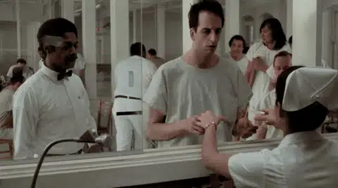
按要求说话，按要求闭嘴。
按规定吃东西，按规定玩耍。
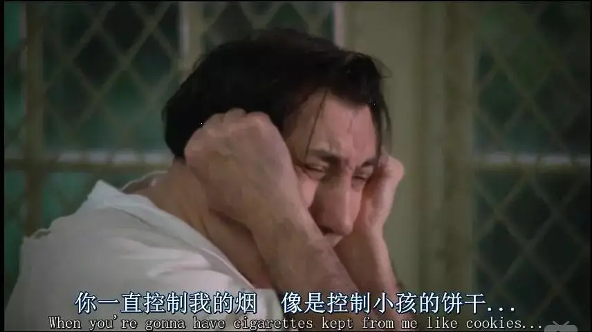
精神病院的生活虽然异常但有条不紊。
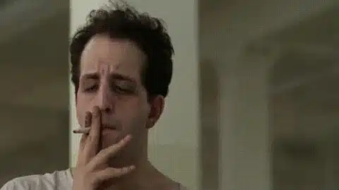
大家讨厌这里，却又离不开这里。
大家知道大护士瑞秋从心底里不把大家当作正常人去尊敬去对待，却又不得不忍气吞声。
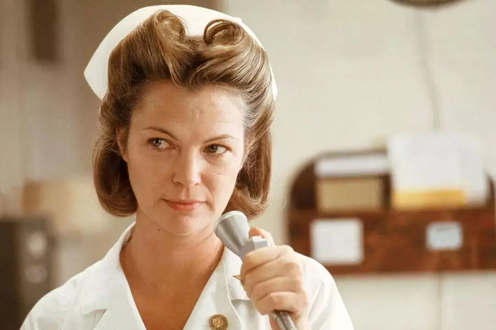
一切那么不正常，一切又看上去那么合理。
直到放荡不羁的麦克墨菲出现。
麦克墨菲虽然叛逆，但是他不同于大护士瑞秋。
他并不认为大家都是疯子。
所以他不像医护人员那样认为酋长又聋又傻。
麦克墨菲竭力教酋长扣篮。
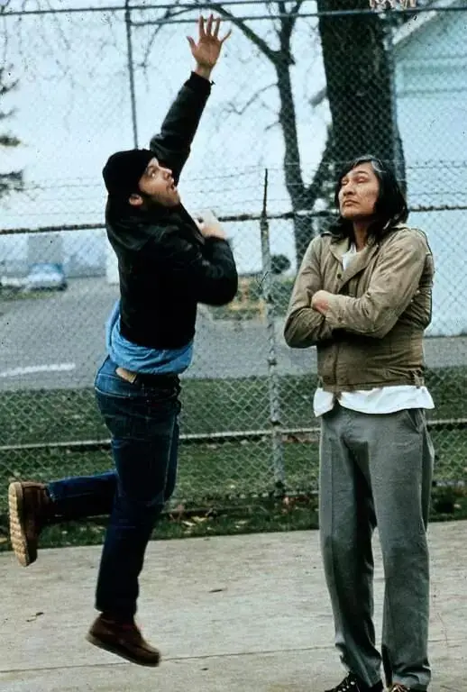
没想到，酋长最后真的学会了扣篮。
麦克墨菲甚至冒险带大家闯出去兜风、钓鱼，让这些死气沉沉的精神病重获短暂的激情和自由。
就这样，麦克墨菲像一颗螺丝一样忽然卡在了正常运行的精神病医院体制的机器中。
大家开始不愿意顺从体制的安排，会为了争取观看棒球世界赛的权利而勇敢举手表决。
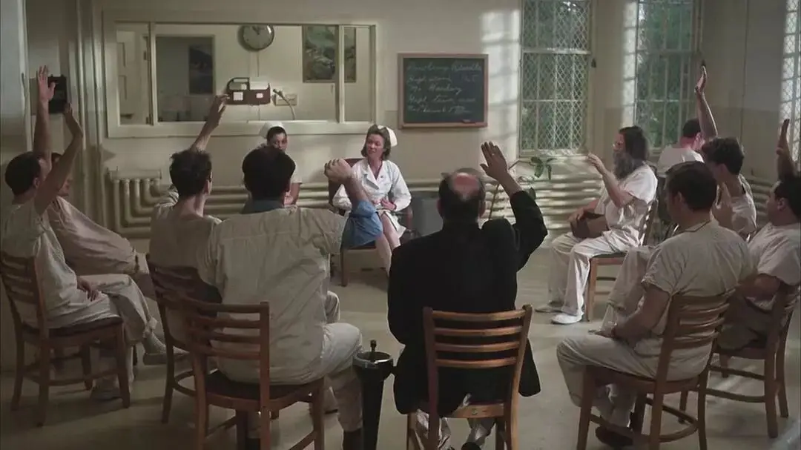
甚至，大家慢慢开始表达自己的愤怒，诉说自己的真实想法。
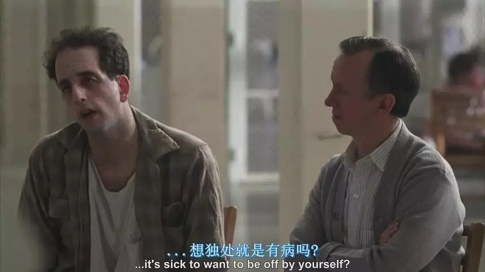
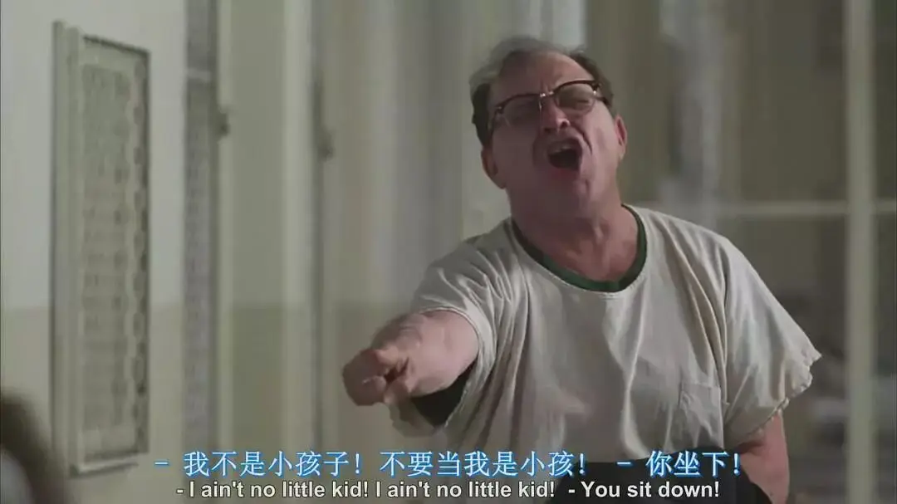
为了让体制的大车正常运行。
瑞秋会以民主的名义剥夺大家看世界赛的权利。
瑞秋会用“大多数人已经习惯这样”的名义封杀个人性的请求。
面对瑞秋权威性的“安抚”，大家纷纷低下了头。
麦克墨菲质问大家：
你们一直抱怨这个地方，但是你们没有勇气走出这里。
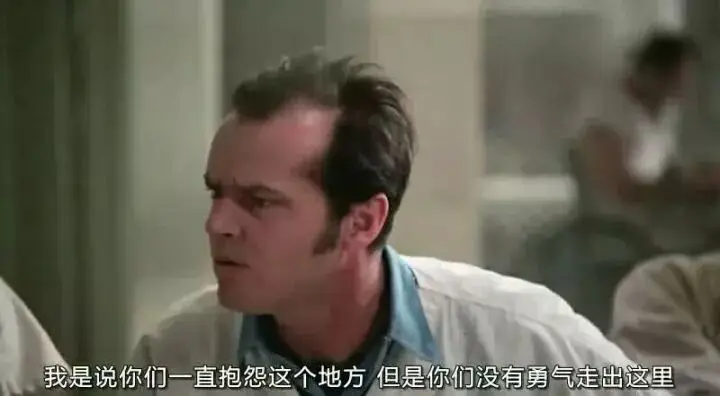
麦克墨菲告诉大家他可以搬起饮水池，砸烂这里的窗户，跑向外面重获自由。
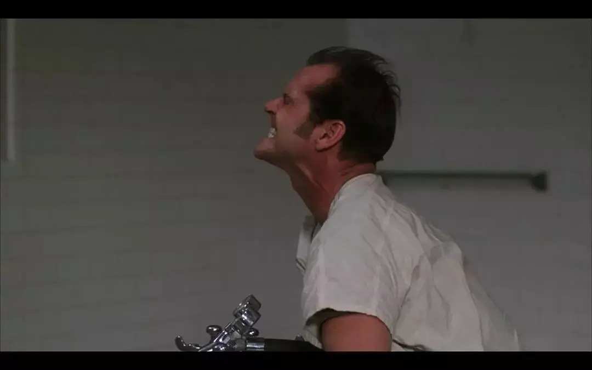
但是他没有成功。
他淡淡地告诉大家：至少我试过了。
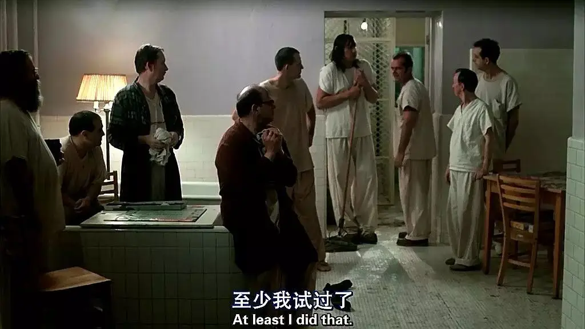
体制的运行容忍不了麦克墨菲这样的人。
为了让他安静。
医院对他进行了残酷的电击治疗。
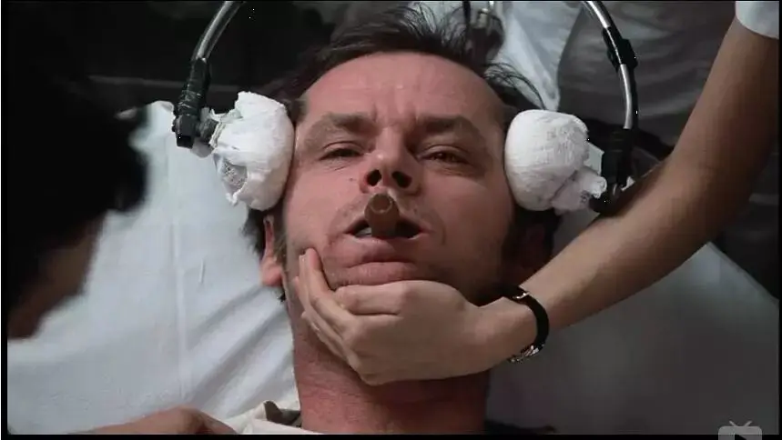
但是这仍然没有阻止麦克墨菲继续向毫无人性的体制发出挑战。
麦克墨菲策划了一场联谊会。
他们将死气沉沉的医院挂满了节日的彩条。
将药物换成了美酒和舞蹈。
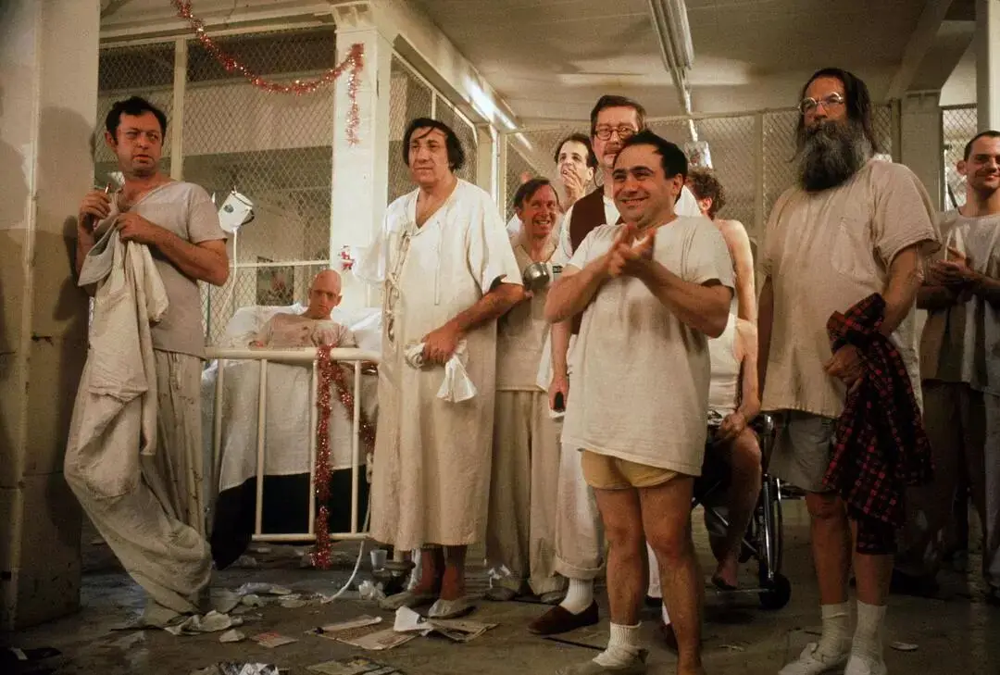
这一晚，规则被打破，体制被蔑视，人性和自由被复活。
甚至，一向胆怯结巴的比利也不再结巴，可以正常的说话，可以向心爱的女孩表达自己爱意。
但是自由只有一晚，迎接他们的是死亡般的镇压。
第二天，比利被护士长瑞秋羞辱、恐吓至自杀。
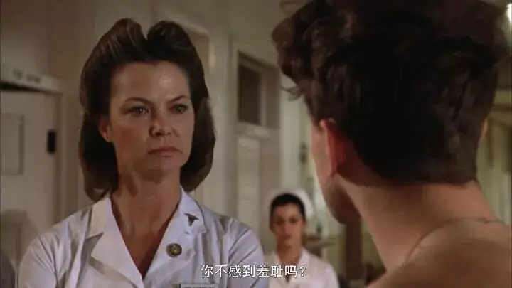
为了彻底消灭麦克墨菲的行动力量，他被取走了脑叶，变成了白痴。
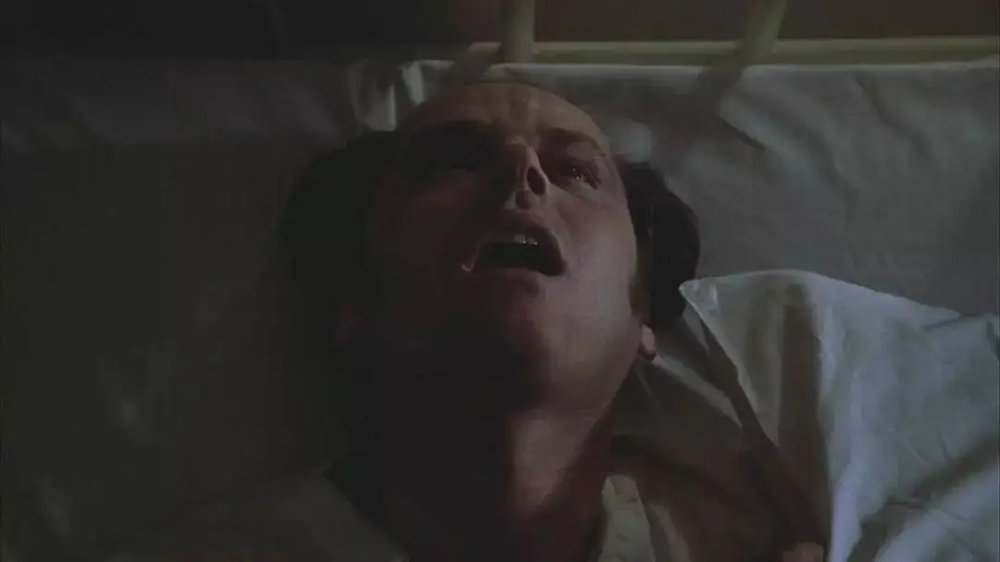
有人说，别人可以控制你的肉体，但是控制不了你的思想。
可是，体制照样可以用先进的科学和医疗手段拿走你的思想。
但是，光熄灭了，余热尚存。
思想被剥夺了，思想曾经播下的种子还在。
麦克墨菲的死彻底地让酋长觉醒了。
他终于明白，在这个非人的体制机器里装聋卖傻只会做假成真，最终变成真聋真傻。
最后的一个晚上，酋长最后拥抱了麦克墨菲，用枕头结束了早已“变样”的墨菲。
因为他明白，对于麦克墨菲，无自由，毋宁死。
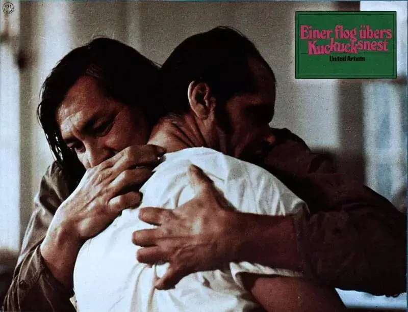
酋长最终搬起了麦克墨菲曾没有搬起的饮水池。
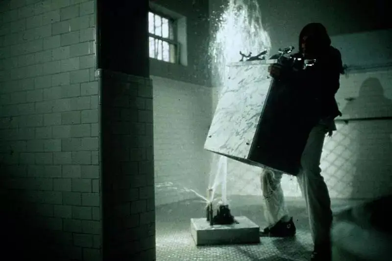
他用饮水池砸开了铁网和窗户，奔向了远方和自由。
被巨大响声惊醒的病人在震惊中高声欢呼。
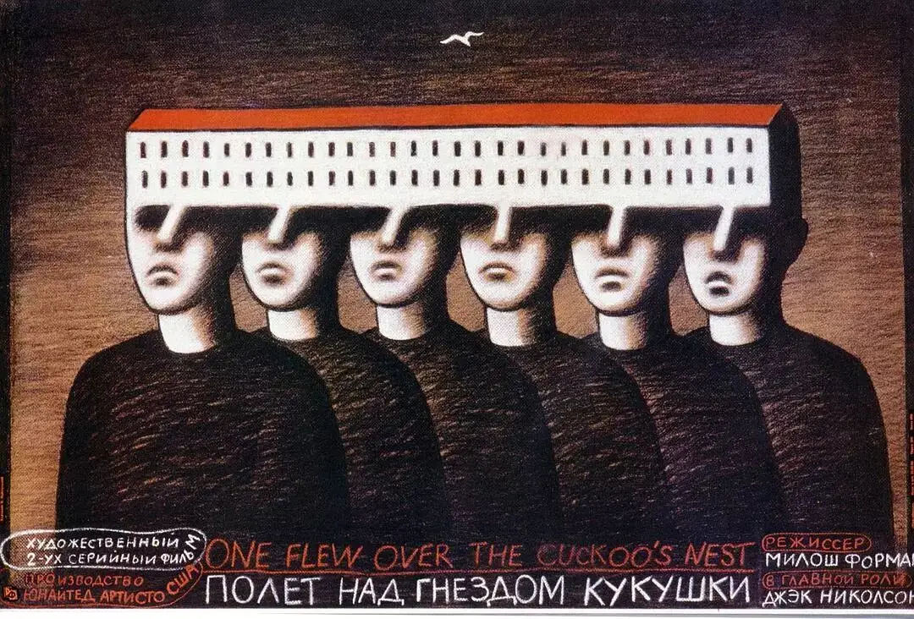
这部曾收获五项奥斯卡大奖的《飞越疯人院》不仅是电影史上的经典和传奇。
更是每个人都需要谨记和明白的寓言。
因为电影中发生的悲剧每天在上演。
当体制将自由碾压后，当社会中的每个部分丧失独立之思想后。
每个人都会不可避免的成为精神病。
本来可以扣篮的，却变得又聋又傻。
本来可以自由表达自己的，却变得胆怯又结巴。
本来可以正常说话的，却变成了一个油腻的人。
本来可以立洪湖志的，却只能立洪浩志。
终于一事无成后，我们只能按时服用“谎言”的药片来让自己心安。

更加可悲的是，我们不仅会被辖制，甚至我们会变成瑞秋。
在她眼里，她的一切工作都是出于好意和本职。
她揭比尔的伤疤，她电击麦克墨菲甚至取他的脑叶。
都是为了医院秩序的稳定。
当你像瑞秋那样身处体制之中时，你也一样可以找到很多理由去配合体制去碾压别人。
你可以说这是为了大家的稳定。
你可以说这是为了我们的形象。
你甚至可以告诉自己，我所做的都只是我的本职工作。
比尔自杀是他自己心里有病，与我没有任何关系。
但是你不知道你从心底里对人没有敬畏，你在体制内已经变成了老油条甚至变成了恶魔。
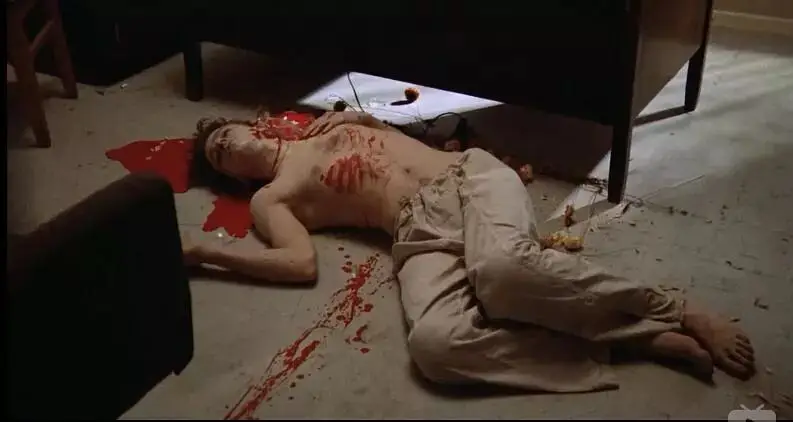
但是我们不会绝望，因为每个时代总有不可为而为之的麦克墨菲。
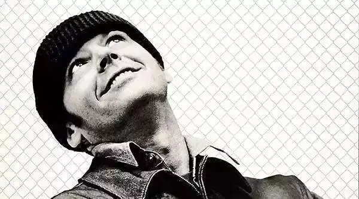
他们会被电击、会被取走脑叶。
但总有无数个默不出声的酋长在观望着别人的勇敢和体制的残忍。
时间到了，他们能创造奇迹。
关注并回复：飞越疯人院
获取电影资源
相关推荐：
《举报者》| 别人有忏悔录，我们有厚黑学
这是一部绝不可辜负的经典
十个破土而出的希望
击垮纳粹独裁的六份传单
《乡愁》 | 没有一个人能够将信仰拍的如此诗意和凝重
100双绝望的眼睛
奥斯卡影帝，你把自己演死了
六百击 | 为了梦想，也为了尿不湿
这里没有挑逗你眼目情欲的小鲜肉
也没有挑动你肉体情欲的段子
更没有膨胀你今生骄傲的鸡血
我们只在乎那些最质朴真诚的作品
在那里我们才能恢复真正的想象力
我们也坚信这才是我们真正需要的

ID:Six_hundred_hits
长按二维码，一键关注
【六百击】
-END-
电影评论
尽情分享朋友圈

苹果打赏
通道
小提示：文末广告是腾讯配送广告，内容与本号无关，但您的每次点击（无需反复点）都会给平台带来几毛收益，欢迎您点击支持六百击。